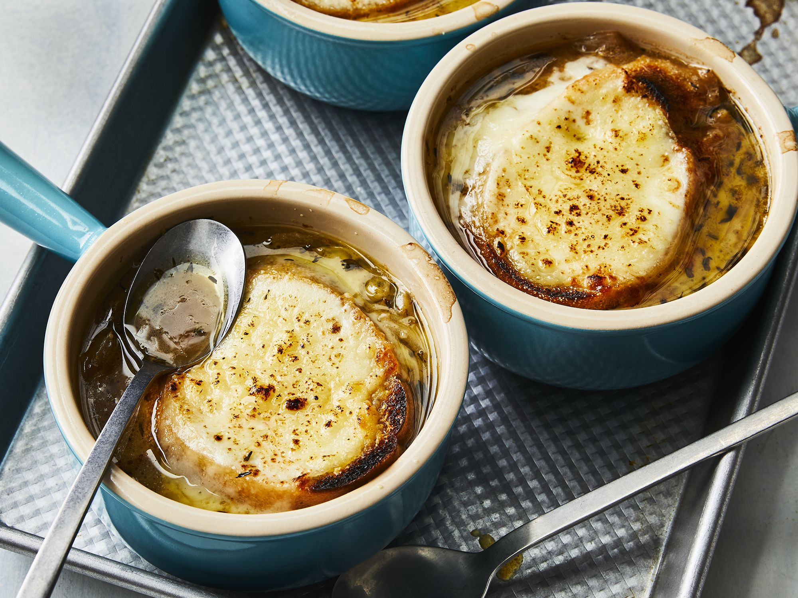

French Onion Soup

A delicious recipe for French onion soup. With melted cheese at the soup and a savory rich flavor, this simple and delicious soup will warm your soul from the inside for the cold seasons!
Ingredients
- 1/2 cup of unsalted butter
- 2 tablespoons of olive oil
- 4 cups of sliced onions
- 5 cups of beef broth
- 2 tablespoons of dry sherry
- 1 teaspoon of fried thyme
- 1 pinch of salt and pepper to taste
- 4 slices of French bread
- 4 slices of provolone cheese
- 2 slices of Swiss cheese, diced
- 1/4 cup grated Parmesan cheese
Steps
- Melt butter with olive oil in an 8-quart stock pot over medium heat. Add onions and continually stir until tender and translucent. Do not brown the onions.
- Add beef broth, sherry, and thyme. Season with salt and pepper. Let simmer for 30 minutes.
- Meanwhile, preheat the oven's broiler.
- Ladle soup into oven-safe serving bowls and place one slice of bread on top of each (bread may be broken into pieces if you prefer). Layer each slice of bread with a slice of provolone, 1/2 slice diced Swiss and 1 tablespoon Parmesan cheese.
- Place bowls on a cookie sheet and broil in the preheated oven until cheese bubbles and browns slightly, 2 to 3 minutes.